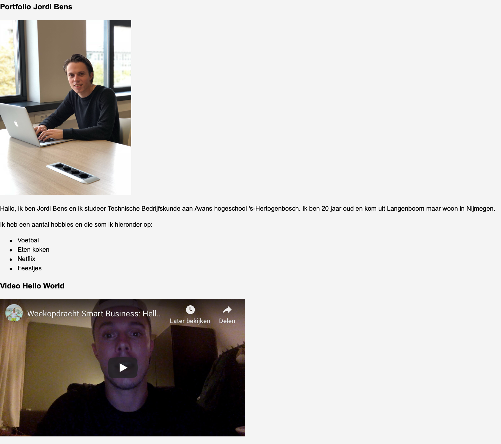

Week 2: Smart Industry
Introductie
Introductie Na de eerste week volop kennis gemaakt te hebben met de minor en de andere studenten gingen we in week 2 volop verder. In de workshops stonden de onderwerpen Story en BMC centraal. In de verschillende vakken liepen de onderwerpen een beetje uiteen dus ik begin met Smart Start. Hierna zal ik vertellen wat er tijdens de lessen van Smart Business besproken werd en als laatst komen Connection en Technology voorbij.
Smart Start Story
ijdens de workshop van Smart Start gingen we in projectgroepen van drie een Story maken voor een potentiele opdrachtgever. De opdrachtgevers die dit jaar weer een opdracht hadden voor de minor Smart Industry werden getoond. Ik met mijn groepje Jesse en Breyten kozen ervoor om een Story te schrijven voor NXP Nijmegen. Het doel van de opdracht was om stapsgewijs informatie te verzamelen over NXP en om daarna een smart solution te verzinnen die nieuwe invalshoeken biedt voor NXP. De opdracht van ons drieën is hieronder uitgewerkt, met de bolletjes of pijltjes kun je door de dia's heen scrollen.
Wij als groepje waren tevreden met onze ideeën. In zeer korte tijd creëer je toch een mooi idee voor NXP. Van deze opdracht heb ik geleerd dat er veel op internet te vinden is over verschillende onderwerpen. Zo kun je al veel over NXP vinden en hoe ver het bedrijf is qua volwassenheid en Smart Industry. Verder door de ‘Groan Zone’ te gebruiken tijdens de brainstormsessie met ons drieën kwamen de beste ideeën naar boven.
Smart Business BMC
Tijdens de workshop van Smart Business kwam AXA op bezoek. AXA is een verzekeringsmaatschappij en kamt met het probleem dat er bij de WA-verzekeringen te veel slechte risico’s ingeschreven staan. Hierdoor lijdt het bedrijf verlies op deze betreffende tak. Aan de studenten van Smart Industry is gevraagd of ze d.m.v. een BMC tot een Smart Idea kunnen komen. In deze opdracht werkte ik samen met Tijmen, Breyten, Luuk en Eliza. De opdracht is hieronder uitgewerkt en wordt weergegeven als je op een bolletje klikt.
❮ ❯We waren tevreden over ons idee en de uitwerkte situaties. Wat ik al tijdens mijn studie heb geleerd maar nu nog eens duidelijk werd, is dat een BMC een goede methode is om tot nieuwe richtingen binnen een organisatie te komen. Doordat je eerst goed een analyse maakt van de huidige situatie kun je daarna mooi bepalen waar verbetering mogelijk is.
Smart Connection
Tijdens de workshop van Smart Connection gingen we door op het vorige onderwerp namelijk HTML en CSS. In de workshop kregen we tijd om aan onze eigen site te werken en om wat te experimenteren. Ik vond het leuk om hiermee bezig te zijn maar merkte wel dat er enige kennis voor nodig is om een werkende maar ook mooi uitziende site te ontwikkelen. Dit wist ik voorheen nog niet. Hieronder het resultaat van de eerste twee weken coderen.
Smart Technology
Tijdens de tweede workshop van Smart Technology heb ik veel vooruitgang geboekt. De licht en water sensor zijn allebei werkende. Verder zit het relais erop, doet de Aan-Uit schakelaar het en kan ik met de app data veranderen. Een filmpje over de gang van zaken in week 2 is hieronder te zien.